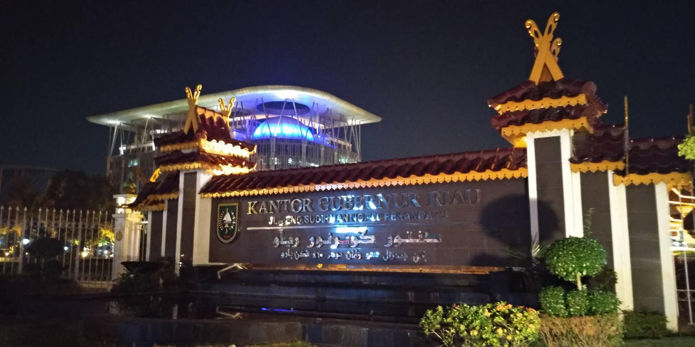
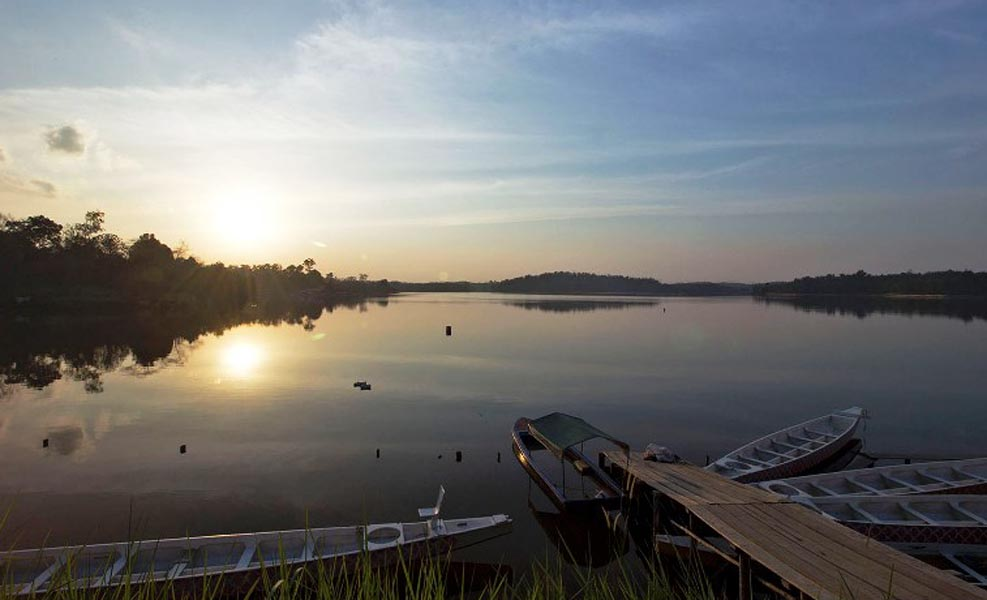
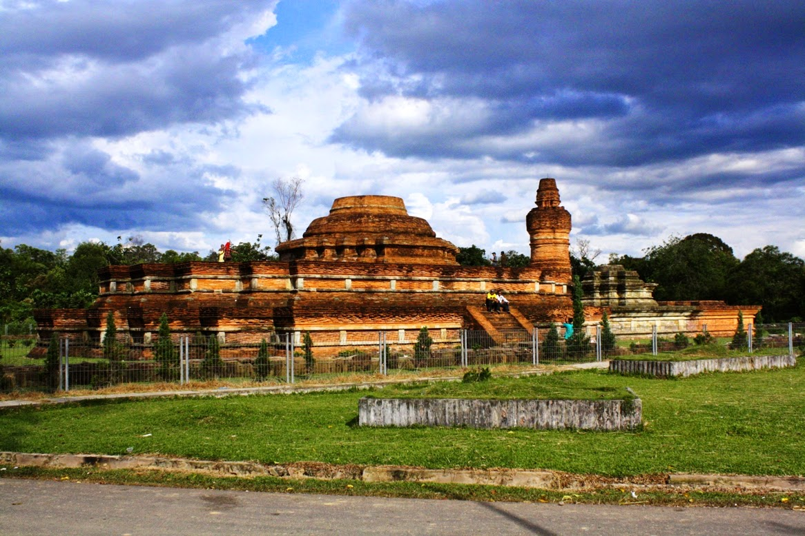

Pekanbaru adalah ibu kota provinsi Riau di Indonesia, dan merupakan
pusat perekonomian utama di sisi timur Pulau Sumatera.
Sejarah

Dalam sejarahnya, Pekanbaru telah mengalami berbagai dinamika.
Konon, nama Pekanbaru diambil dari kata 'pekan' yang merujuk pada
pasar tradisional yang ramai dikunjungi. Pasar ini menjadi pusat
aktivitas ekonomi dan sosial masyarakat Melayu di masa lalu. Ada
juga yang mengaitkan nama Pekanbaru dengan kata 'baru', yang
mengisyaratkan bahwa kota ini merupakan pemukiman baru yang
berkembang pesat. Perkembangan Pekanbaru sebagai pusat perdagangan
semakin pesat seiring dengan ditemukannya sumber daya alam minyak
bumi di wilayah Riau. Hal ini menjadikan Pekanbaru sebagai kota yang
strategis dan menarik minat pendatang dari berbagai daerah, sehingga
turut memperkaya budaya dan keberagaman masyarakatnya.
Dalam pandangan filosofi Melayu, Pekanbaru sering diibaratkan
sebagai 'sebuah perahu yang berlayar di tengah samudra kehidupan'.
Masyarakat Melayu Pekanbaru dikenal memiliki semangat gotong royong
yang tinggi, saling bahu-membahu dalam menghadapi segala tantangan.
Semangat ini tergambar dalam pepatah Melayu, 'Bersatu kita teguh,
bercerai kita runtuh'. Sebagai 'perahu' yang berlayar di tengah
samudra kehidupan, masyarakat Melayu Pekanbaru senantiasa berpegang
teguh pada kearifan lokal dan nilai-nilai luhur yang diwariskan oleh
nenek moyang. Kearifan lokal ini menjadi kompas yang memandu mereka
dalam menghadapi dinamika zaman yang terus berubah.
Geografis
Pekanbaru, nama yang begitu akrab di telinga kita, konon berasal
dari kata 'pekan' yang berarti pasar atau tempat bertemunya para
pedagang. Namun, ada juga yang meyakini bahwa nama ini terkait erat
dengan kondisi geografis kota ini yang berada di tepi sungai Siak.
Sungai Siak yang membelah kota ini, bagaikan urat nadi yang
menghidupi masyarakat Pekanbaru. Ada yang mengatakan bahwa 'pekan'
merujuk pada tempat di tepi sungai Siak yang menjadi pusat aktivitas
perdagangan dan pertukaran barang.
Letak geografis Pekanbaru yang strategis di tepi Sungai Siak tidak
hanya memberikan aksesibilitas yang baik, tetapi juga menjadikan
kota ini sebagai pusat perdagangan yang penting. Sungai Siak menjadi
jalur utama untuk menghubungkan Pekanbaru dengan wilayah-wilayah
lain di Sumatera, bahkan hingga ke Semenanjung Malaya. Dengan
demikian, Pekanbaru tumbuh menjadi kota kosmopolitan yang kaya akan
budaya dan peradaban. Keberadaan sungai ini juga memungkinkan
Pekanbaru untuk berkembang menjadi pusat pemerintahan Kesultanan
Siak Sri Indrapura, karena memudahkan dalam mengontrol wilayah
kekuasaan dan mengelola perdagangan.
Wisata
Pekanbaru, kota yang terletak di tepi Sungai Siak, menawarkan
pengalaman wisata yang tak terlupakan. Dengan kekayaan budaya Melayu
yang kental, kota ini menyajikan beragam tradisi dan kesenian yang
menarik. Selain itu, Pekanbaru juga memiliki sejumlah destinasi
wisata alam yang indah, seperti Danau Khayangan dan Candi Muara
Takus.
Danau Khayangan

Danau Khayangan adalah salah satu objek wisata buatan yang populer
di Pekanbaru. Dengan pemandangan alam yang indah dan suasana yang
tenang, danau ini menawarkan pengalaman yang menyegarkan bagi
pengunjung. Beberapa aktivitas yang bisa dilakukan di sini antara
lain:
Berkeliling danau:
Pengunjung dapat menyewa perahu untuk mengelilingi danau dan
menikmati pemandangan sekitar.
Memancing: Bagi penggemar memancing, danau ini
menyediakan spot-spot menarik untuk menyalurkan hobi.
Berkemah: Ada area khusus yang disediakan untuk
berkemah, sehingga pengunjung bisa menikmati suasana malam di
sekitar danau.
Piknik: Area sekitar danau juga cocok untuk
dijadikan tempat piknik bersama keluarga atau teman.
Candi Muara Takus

Candi Muara Takus adalah situs sejarah dan budaya yang sangat
penting di Riau. Candi ini merupakan peninggalan Kerajaan
Sriwijaya dan merupakan salah satu contoh arsitektur Hindu-Buddha
yang masih terawat dengan baik di Indonesia. Beberapa keunikan
dari Candi Muara Takus antara lain:
Arsitektur unik: Candi ini memiliki arsitektur yang
khas dengan perpaduan gaya India dan lokal.
Relief-relief indah: Dinding-dinding candi dihiasi
dengan relief-relief yang menceritakan kisah-kisah dari agama
Hindu dan Buddha.
Lingkungan alam yang asri: Candi Muara Takus
terletak di tengah hutan yang rimbun, sehingga suasana di
sekitar candi sangat tenang dan damai.